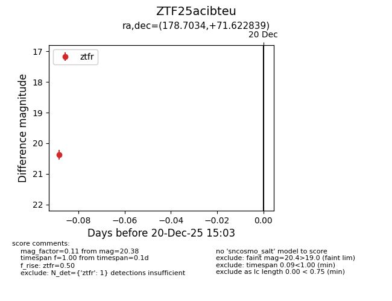
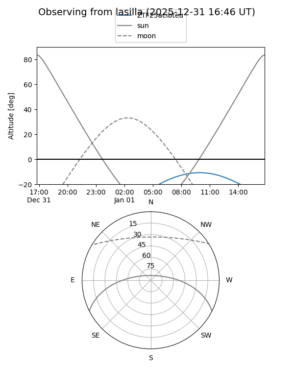
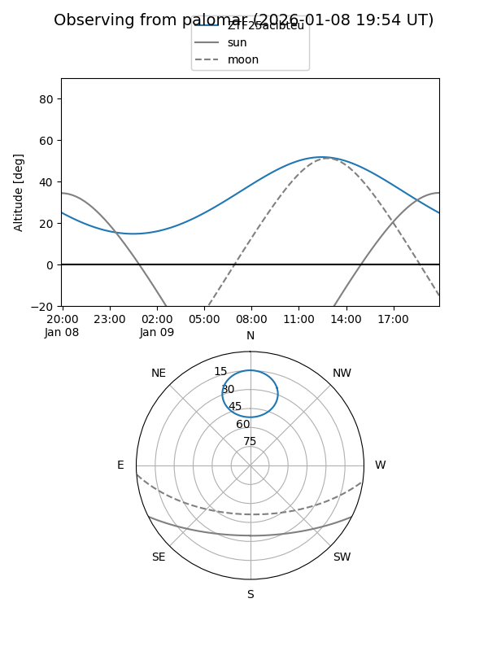

ZTF25acibteu
Target ZTF25acibteu at 2026-01-09 12:49
Aliases and brokers:
FINK: link
Lasair: link
ALeRCE: link
alt names
ZTF25acibteu (ztf,fink_ztf)
Coordinates:
equatorial (ra, dec) = 178.7034,+71.62284
equatorial (HMS+DMS) = 11:54:48.82,+71:37:22.22
galactic (l, b) = (129.1716,+44.81308)
Flags:
Photometry:
last ztfg=20.37, ztfr=20.38
1 ztfg, 1 ztfr detections
Lightcurve

Visibility


Additional plots